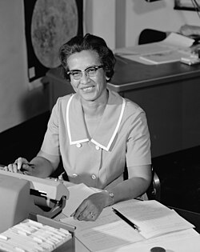

Ada Lovelace

Augusta Ada Lovelace foi uma matemática e escritora inglesa, considerada a primeira
programadora
da
história. Ela trabalhou com Charles Babbage na Máquina Analítica, um modelo inicial de
computador.
Em
suas anotações, Ada escreveu o que é considerado o primeiro algoritmo, e também previu
que
computadores
poderiam ir além dos números, processando imagens, sons e linguagem. Sua visão pioneira
abriu
caminho
para a computação moderna, em uma época em que mulheres raramente tinham voz na ciência.
Margaret Hamilton

Margaret Hamilton foi uma cientista da computação e engenheira de software
norte-americana, conhecida por liderar a equipe responsável pelo desenvolvimento do
sistema de navegação da Apollo 11, missão que levou o ser humano à Lua em 1969. Ela foi
pioneira na área ao cunhar o termo "engenharia de software", contribuindo para o
reconhecimento da disciplina como parte fundamental da ciência da computação. Seu
trabalho preciso evitou falhas críticas durante o pouso lunar, tornando-se símbolo de
competência, inovação e liderança feminina na tecnologia.
Katherine Johnson

Katherine Johnson foi uma matemática afro-americana que trabalhou na NASA por mais de 30
anos.
Seus
cálculos de órbita foram essenciais para o sucesso das primeiras missões espaciais
tripuladas
dos
EUA,
incluindo a que levou John Glenn ao espaço. Mesmo enfrentando racismo e machismo em um
ambiente
dominado
por homens brancos, Katherine se destacou com seu talento e precisão. Ela se tornou
símbolo
de
luta
por
igualdade e excelência na ciência.
Grace Hopper

Grace Hopper foi uma cientista da computação e oficial da Marinha dos Estados Unidos. Ela
desenvolveu
o
primeiro compilador da história — uma ferramenta que traduz linguagens de programação
para
código
executável — e participou da criação da linguagem COBOL, amplamente usada em sistemas
bancários
até
hoje. Grace também ajudou a popularizar o termo "bug" para erros em software. Visionária
e
determinada,
ela foi uma das primeiras mulheres a ter grande destaque na computação moderna.
Radia Perlman

Radia Perlman é uma engenheira de redes americana, considerada uma das principais
responsáveis
por
tornar
a internet como a conhecemos possível. Ela criou o protocolo Spanning Tree, essencial
para o
funcionamento de redes de grande escala. Apesar de seu enorme impacto, Radia nem sempre
recebeu
o
reconhecimento merecido — algo comum para mulheres na tecnologia. Mesmo assim, ela se
tornou
um
exemplo
de inteligência, humildade e contribuição duradoura à ciência da computação.
 Grace e o
computador
Univac
Grace e o
computador
Univac